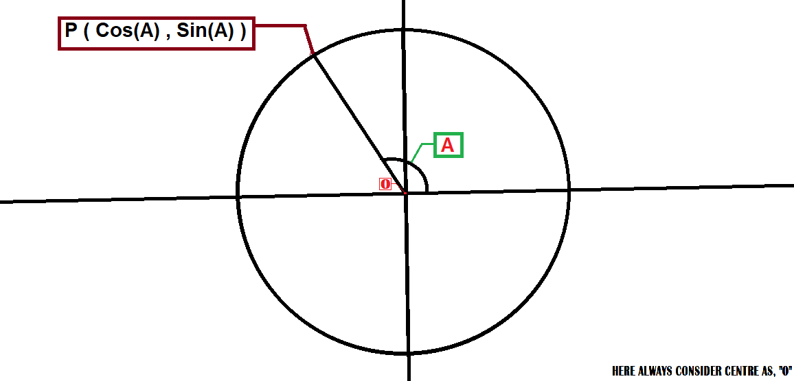
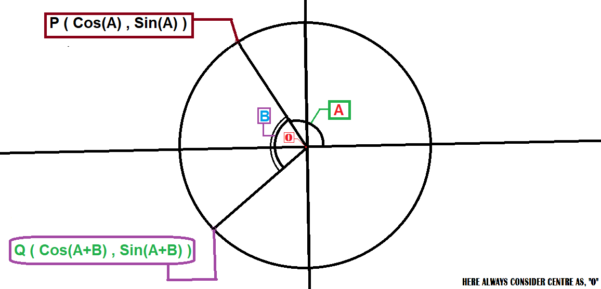
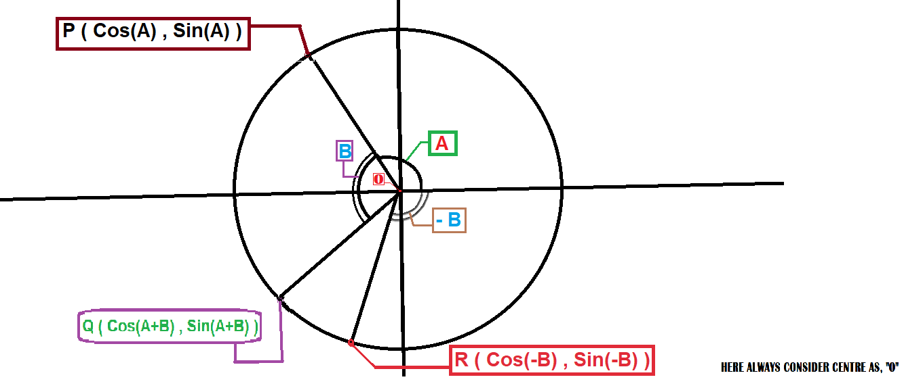
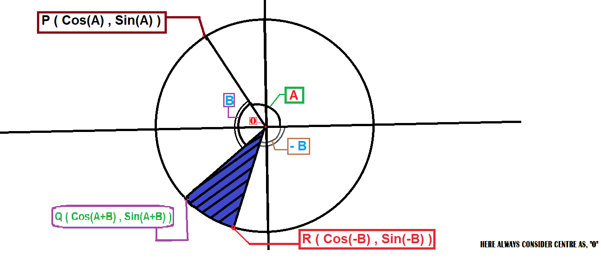
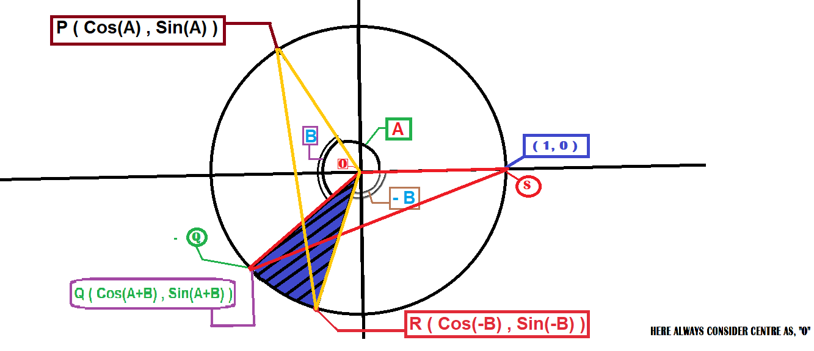
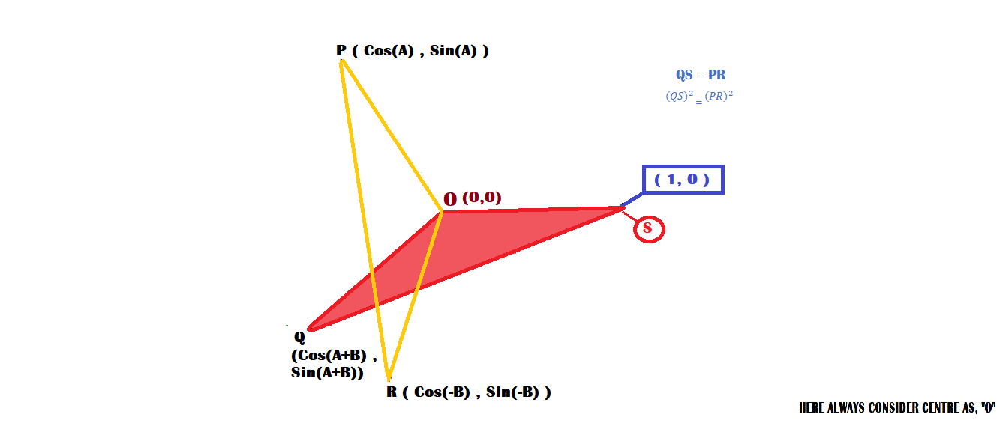

First, take a Cartesian coordinate plane
A Cartesian plane has two perpendicular number lines: the horizontal x-axis and the vertical y-axis. Their intersection is the origin O = (0, 0). We measure every point's position using an ordered pair (x, y): first its horizontal coordinate, then its vertical coordinate.
Now draw a circle whose centre is O and whose radius is exactly one unit. This is the unit circle.

Doubt Box · Why choose radius 1 unit?
For an angle θ, the right-triangle definitions are
sin θ = opposite side / hypotenuse
On a circle, the radius is the hypotenuse of the right triangle formed by a point and its perpendicular projection onto the x-axis. If we choose radius r = 1, then
So the point on the circle can be written directly as (cos θ, sin θ). If the radius were 5, for example, the point would instead have coordinates (5 cos θ, 5 sin θ); we would need to divide by 5 to recover sine and cosine. Choosing 1 removes that extra factor and makes calculations simpler. The radius is not required to be 1 for trigonometry to exist; it is chosen because it makes the coordinate connection especially clean.
Choose point P at angle A
Take a point P on the circle. The ray OP makes an angle A with the positive x-axis, measured counterclockwise. Since P lies on the unit circle, its coordinates are
That means its horizontal position is cos A and its vertical position is sin A.
The reference point S = (1, 0)
Let S be the point where the circle meets the positive x-axis. It is one radius to the right of the origin. Therefore its coordinates are S = (1, 0). Its angle from the positive x-axis is 0°.
Doubt Box · Why is S's coordinate (1, 0)?
S is on the horizontal axis, so its vertical coordinate is 0. It is exactly one radius to the right of O, and the radius is 1, so its horizontal coordinate is 1. Hence S = (1, 0).
Rotate from ray OP by another angle B
Starting from ray OP, turn farther counterclockwise through angle B. The new ray makes total angle A + B with the positive x-axis. Call its point on the circle Q.

Doubt Box · Why does Q use A + B?
The first turn from the x-axis to OP is A. The second turn starts at OP and adds B more. The total turn from the x-axis is therefore A + B. Every point on the unit circle at angle θ has coordinates (cos θ, sin θ), so substituting θ = A + B gives Q = (cos(A+B), sin(A+B)). This is the coordinate definition of Q, not yet the addition formula we are trying to prove.
Define R by turning clockwise through B
From the positive x-axis, turn clockwise by angle B. Clockwise angles are negative under the usual convention, so this ray has angle −B. Let its point on the circle be R.

The last equality uses the even/odd properties: cosine does not change sign when the angle changes sign, while sine does.
Read the marked diagram: the red clockwise arc is not decoration. It records the direction from the positive x-axis to OR. Because that turn is clockwise, its signed angle is −B; therefore R lies at the reflected angle below the x-axis, with coordinates (cos B, −sin B).
Doubt Box · Why use −B here?
We need the angle between OP and OR to be A + B. OP points at angle A, while OR points at angle −B. The angular separation is A − (−B) = A + B. This makes the angle between OP and OR match the angle between OQ and OS, which is (A+B) − 0 = A+B. That matching angle is the key to proving the triangles congruent.
One picture, four important points
This is the marked diagram for the same construction. The centre is always O = (0, 0).

- Blue/green A: start at the positive x-axis and turn anticlockwise by A to reach P.
- Red −B direction: from the positive x-axis turn clockwise by B to reach R. So the signed angle is −B.
- Q: turn anticlockwise by A, then continue by B. The final angle is A+B.
- Coordinates follow the points: P = (cos A, sin A), Q = (cos(A+B), sin(A+B)), and R = (cos(−B), sin(−B)).
The arcs show direction and angle; the radius lines show which point belongs to each angle. Keep these two ideas separate while reading the diagram.
Find the square of PR

In this diagram, the yellow segment PR and the red segment QS are the two lengths we compare. The yellow triangle is OPR and the red triangle is OQS. The blue hatching is only a visual highlight; we do not calculate its area.
For points (x₁, y₁) and (x₂, y₂), the squared-distance formula is:
Because the triangles prove that PR = QS, their squares are also equal: PR² = QS². So we can work entirely with squared lengths. No square-root sign is needed anywhere in this derivation.
Here P = (cos A, sin A) and R = (cos B, −sin B). Therefore
Expand both squares:
Identity used · Square of a sum (click to expand)
+ sin²A + 2sinA sinB + sin²B
− 2cosA cosB + 2sinA sinB
= 1 + 1Both highlighted 1s add to 2. − 2cosA cosB + 2sinA sinB
= 2 − 2(cosA cosB − sinA sinB)
Hover over the two 1s (or focus them with the keyboard) to see which constants combine to make 2.
Why triangles OPR and OQS are congruent
Focus on triangles OPR and OQS. In this image, the red shading highlights triangle OQS; it is not an area calculation. The equal included angles are established from the directions of the rays and the chosen angle range, not from the shading itself.

1. OP = OQ = 1 because both are radii of the same unit circle.
2. OR = OS = 1 for the same reason.
3. ∠POR = ∠QOS = 360° − (A + B) (for the angle range shown). The directed angular difference between OP (direction A) and OR (direction −B) is A−(−B)=A+B. Similarly, the directed difference between OQ (direction A+B) and OS (direction 0) is A+B. In the specific diagram range used here, A+B is greater than 180°, so each triangle’s smaller interior angle is 360°−(A+B). The two included interior angles are therefore equal.
Two sides and the included angle are equal, so △OPR ≅ △OQS by SAS (Side–Angle–Side).
Corresponding sides of congruent triangles are equal. The side PR corresponds to QS, therefore
Doubt Box · Which theorem is this?
The congruence test is called SAS (Side–Angle–Side): two sides and the angle between those two sides match. After triangles are proved congruent, we use the result often written as CPCTC — corresponding parts of congruent triangles are congruent. This is why PR = QS. We do not use “same area” to infer equal sides; equal area alone would not prove that two sides are equal.
Use Q and S to find QS
Q = (cos(A+B), sin(A+B)) and S = (1,0). Use the squared-distance formula directly:
= (cos(A+B) − 1)² + sin²(A+B)
= cos²(A+B) − 2cos(A+B) + 1 + sin²(A+B)
= 1 − 2cos(A+B) + 1
= 2 − 2cos(A+B)
The cosine addition formula appears
We already proved PR² = QS². Substitute the two expressions:
Subtract 2 from both sides and divide both sides by −2:
∴ cos(A + B) = cos A cos B − sin A sin B
That is the cosine addition identity, derived using only the unit circle, SAS congruence, and the Class 10 distance formula.